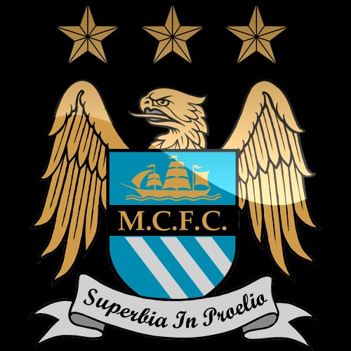

|  |
Manchester city is an English Premier League futbol club based in Manchester, England. Founded in 1880 as West Gorton, they became Ardwick Association futbol club in 1887 and Manchester city in 1894. The club’s most successful period was in the late 1960’s and early 1970’s when they won League Championship, FA Cup, League Cup and the European Cup under the management of Joe Mercer and Malcolm Allison. Today Manchester city is coach by one of the top soccer coaches in the world, which explains why the team is very successful. Besides having a great coach there’s other thing that play along like having great players on the roster as well as great team chemistry.
Manuel Pellegrini Roberto Mancini born in Santiago, Chile to Italian parents. Manuel Pellegrni is something different in the footballing world having achieved a degree in civil engineering. Manuel Mancini soccer career began when he was in college playing for the university soccer team. During his career as soccer player Mancini made 451 appearances between 1973 and 1986 for his hometown club “Universidad de Chile”. Mancini also represented his country Chile as a player on 28 occasions before retiring to fully concentrate on coaching at the age of 33. Mancini first job as a coach was at the Universidad de Chile where he played his entire soccer career, after a first season of many downs Mancini was relegated from his position as a coach. After the first year not ending up so good Mancini saw modest success that followed a subsequent year long others soccer clubs that earned him respect and notoriety among other coaches. After Mancini’s great success in South America he was hired by his first European soccer club Villarreal. As a new coach in Europa nobody was expecting great things from him, many where wrong Mancini was making history for the club. |